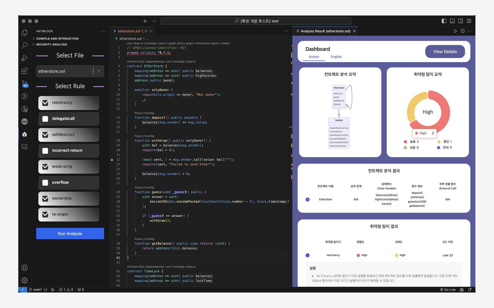
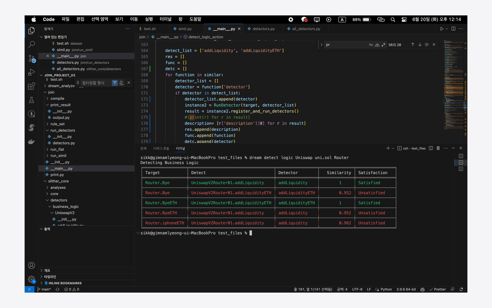

2024.09–2026.08
성신여자대학교 일반대학원 융합보안공학과 석사
GPA4.5 / 4.5
학위논문DeFiSense: 온체인 이벤트 로그 시맨틱 그래프 기반 DeFi 가격 조작 공격 탐지
지도교수이일구
Namryeong Kim
맡은 일에 대해 책임감 있으며 다양한 방법을 시도해보는 것을 좋아합니다. 알고 있는 것을 함께 나누기 위해 준비하고 실제로 나누는 과정에서 성취감을 느낍니다. 스마트 컨트랙트를 배포 전에 점검하는 도구를 만들고 사고가 난 뒤에는 공개 거래 기록으로 자금 흐름을 되짚으면서, 새로운 기술이 금융 서비스에 들어올 때 무엇을 확인해야 하는지를 연구해 왔습니다.
2024.09–2026.08
GPA4.5 / 4.5
학위논문DeFiSense: 온체인 이벤트 로그 시맨틱 그래프 기반 DeFi 가격 조작 공격 탐지
지도교수이일구
2019.03–2023.02
GPA4.33 / 4.5

Tool / Smart Contract SafeDevAnalyzer 스마트 컨트랙트를 배포하기 전에 코드와 취약점을 확인하는 VS Code 도구입니다. 3인 팀장, Protocol Camp 5기 최우수상
Tool / Static Analysis JOIN 버전과 분석 환경이 다른 외부 컨트랙트를 같은 절차로 검토하는 Python CLI입니다. Static Analysis Development 담당 Research / On-chain
DeFiSense
공개 거래 기록만으로 DeFi 가격 조작 공격을 탐지하고, 누가 이익을 얻고 손실을 부담했는지 복원합니다.
석사 학위논문, 공격 220건 중 205건 탐지
Research / On-chain
DeFiSense
공개 거래 기록만으로 DeFi 가격 조작 공격을 탐지하고, 누가 이익을 얻고 손실을 부담했는지 복원합니다.
석사 학위논문, 공격 220건 중 205건 탐지
 Research / Distributed Ledger
rPBFT
일부 노드에 지연이나 장애가 생겨도 거래 합의 성능을 유지하는 합의 구조를 설계하고 비교했습니다.
공동 제1저자, IEEE Transactions on Big Data 2026
Research / Distributed Ledger
rPBFT
일부 노드에 지연이나 장애가 생겨도 거래 합의 성능을 유지하는 합의 구조를 설계하고 비교했습니다.
공동 제1저자, IEEE Transactions on Big Data 2026
한화생명 드림플러스의 교육 프로그램에서 도구를 만들어 최우수상을 받았고, 다음 기수에는 운영 매니저 제안을 받아 참가팀을 도왔습니다.
배포 전 코드 점검 도구에서 시작해, 코드만으로 설명되지 않는 사고를 실제 거래 기록으로 분석하는 연구로 옮겨 왔습니다.
학부연구생 때 합의 구조를 같은 기준으로 평가하는 연구로 시작해, 석사과정에서 장애 상황에도 성능을 유지하는 합의 구조를 설계하고 국제 저널에 게재했습니다.
저널 6편(게재 확정 1편 포함), 국제학회 3편, 국내학회 11편